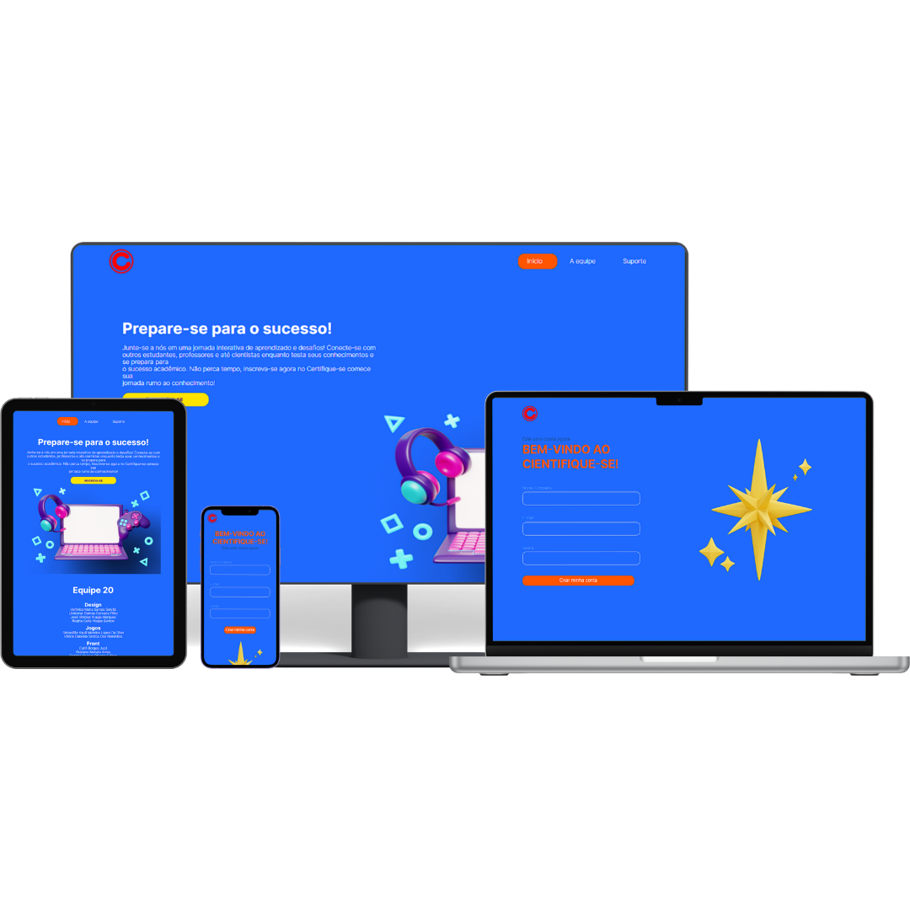
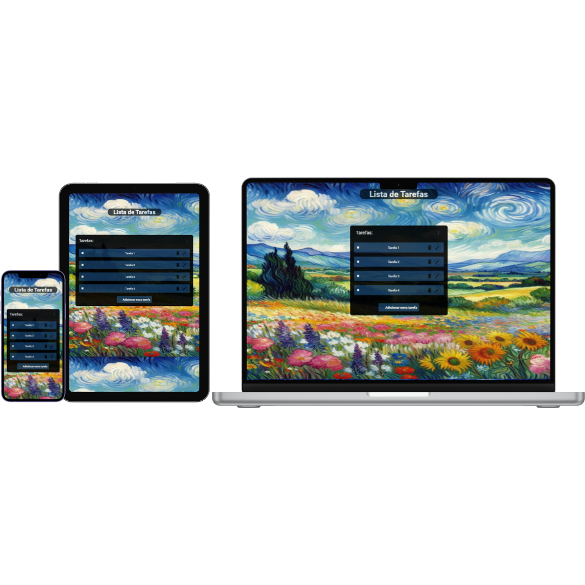

Olá, Eu sou Widson Martins.
Desenvolvedor front-end


Sobre mim
Tenho 21 anos, sou estudante de desenvolvimento front-end pelo programa trilhas do Inova Maranhão, com experiência em projetos individuais e em grupo como forma de praticar o conteudo do programa utilizando JavaScrip, HTML, CSS, Git, Github, TypeScript modelagem de bancos de dados e React.
Curriculo (PDF)Meus projetos

Landing-page
Feito para um desafio em conjunto com outras trilhas do progama inova maranhão, como pratica dos estudos em HTML, CSS e JavaScript.
Ver projeto
To-Do list
Feito para um desafio em trio do progama inova maranhão, como pratica dos estudos em HTML, CSS, JavaScript e TypeScript.
Ver projeto